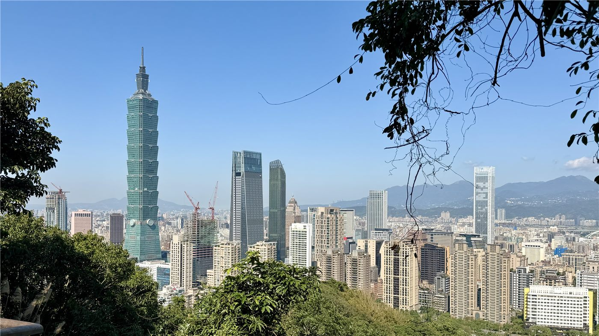

橋대만

사진=Wikimedia Commons (자유 라이선스) · 기사 주제 관련 이미지
헤드라인대만 지방선거 D-13, 타이베이 시장 선거 막판 총력전…沈伯洋 ‘5만 명 집회’ vs 蔣萬安 ‘국민당·민중당 연합 거리유세’
오는 28일 치러지는 대만 九合一 지방선거를 13일 앞둔 15일, 최대 격전지인 타이베이 시장 선거에서 민진당 沈伯洋 후보와 재선에 도전하는 국민당 蔣萬安 시장이 각각 대규모 유세를 벌였다. 賴清德 총통은 沈 후보에게 ‘水滴寶劍’을 선물하며 힘을 실었고, 蔣 시장은 민중당 黃國昌 주석과 야시장을 누비며 지지층 결집에 나섰다. 같은 날 국민당은 남부 台南에서 연합 유세를 열고 원전 재가동을 쟁점으로 내세웠다.
전홍발 기자 · 2026.11.16